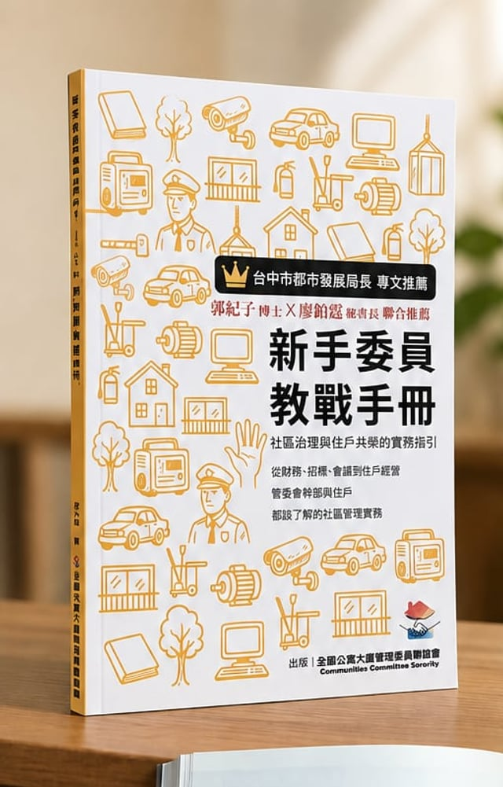

社區管理實務課程
財務規劃、住戶溝通、物業管理、電動車充電設備等主題，邀請實務講師分享。
本會任務
推動公寓大廈管理委員互助、聯誼，維護社區住戶權益，真正達到社區自治的精神。
提升管委會成員對公寓大廈管理條例等相關法令的知識，以及實際理解、運用的能力。
建立社區管理的實務經驗交流平台，讓委員之間互相支援、交換做法、解答疑惑。
督促管理委員會成員秉持服務原則，依法行事、不營私舞弊，守住社區的公正與信任。
活動成果
管委會交流日、社區親子寓動會、北屯鬧起來萬聖節、會員講座，以及與公部門和在地夥伴的合作。
服務項目
財務規劃、住戶溝通、物業管理、電動車充電設備等主題，邀請實務講師分享。
大型委員聯誼與走進各社區的小型聚會，實地看看別的社區怎麼做。
公設點交流程與注意事項、樂居金獎等評選的準備經驗傳承。
會員推薦廠商名錄、各式管理表單範本，以及節慶佈置道具的出借媒合。
出版與製作
一本寫給新任委員的工具書，一個讓委員說故事的節目。
